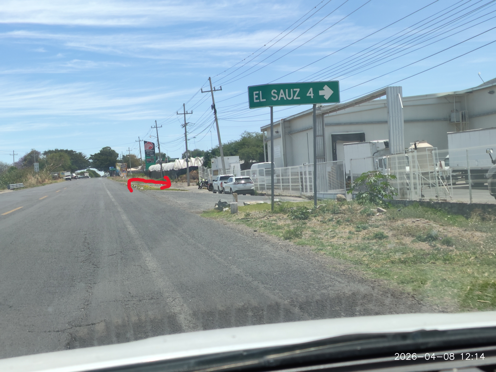
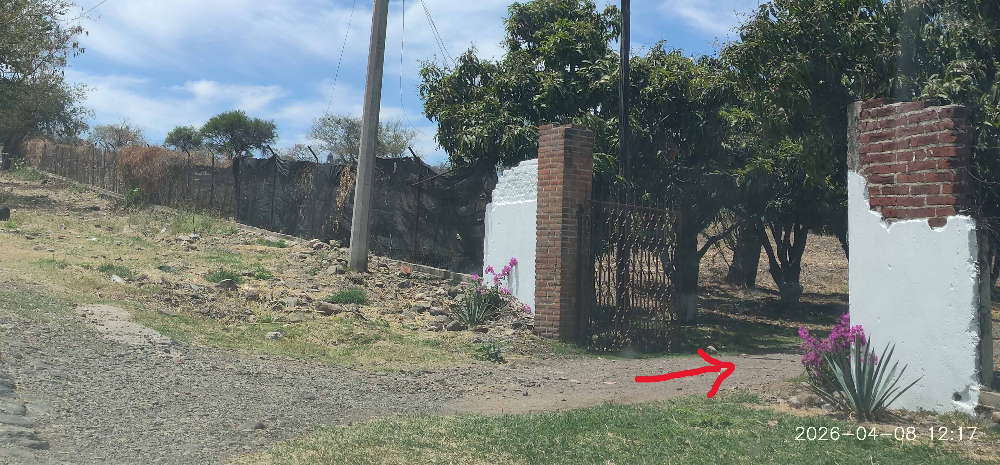
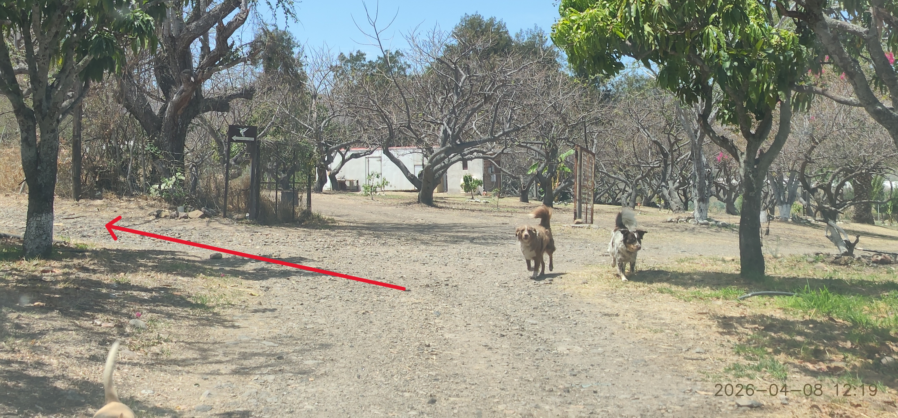
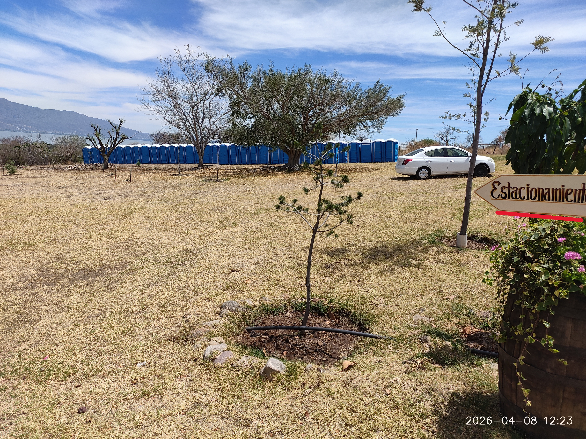
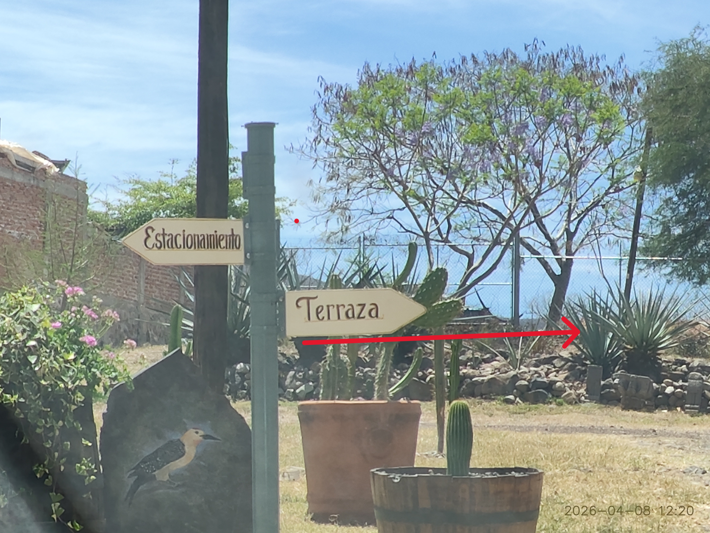

Granja Reynoso - Camino al Sauz, El Sauz, Jalisco
200 metros antes de la gasolinera PEMEX, gira a la derecha después del letrero "El Sauz 4"

A 360 metros del desvío, en el lado derecho encontrarás un portón cafe con bardas blancas y de ladrillo.

En la primera bifurcación, gira a la izquierda (en la dirección indicada por la flecha del cartel de colibrí).

Encontrarás el estacionamiento a tu izquierda, en toda el área verde. Ten cuidado al estacionar para no dañar los arbolitos.

Dirígete hacia la terraza donde te estará esperando el personal de recepción para guiarte. ¡Estamos felices de verte!
